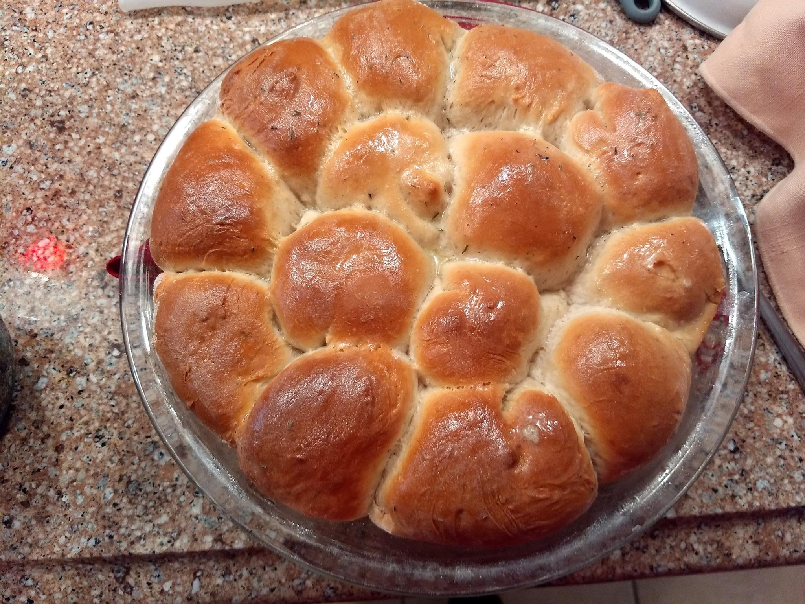

This is absolutely delicious! I look for any excuse to make it!!
Recipe by Lynne Rossetto Kasper

Description
- Yield: 3-4 servings
- Time: 15 minutes prep, 15 minutes cooking, 30 minutes total
The gorgeous simplicity of a classic oyster stew has had a hard time lately. Chefs want to do the multi-ingredient razzle-dazzle with a dish that is perfect when you just leave it be.
In this case, taking the easy way out gives you the best of the best. Oyster stew is that occasional luxury you can pull off on a work night. A handful of ingredients, a pint of shucked oysters and you have one of the great dishes of winter.
Ingredients
- 1 pint shucked oysters in their liquid
- 4 tablespoons butter
- 2 medium shallots, minced
- 1 small garlic clove minced
- salt and fresh ground black pepper to taste
- 4 cups milk
- 2 cups heavy cream
- 2 to 3 drops Tabasco sauce, or to taste
- Oyster crackers
- Extra butter (optional)
Directions
-
Lift the oysters out of their liquid, checking for bits of shell and sand. Pass the liquid through a fine strainer to remove any sand. Chill the oysters and liquid separately.
-
In a 3 to 4-quart saucepan melt the butter over medium heat, stir in the shallots and saute until shallots are softened and clear. Blend in garlic, a few pinches of salt and pepper. Cook 30 seconds. Stir in the milk, cream, oyster liquid and Tabasco. Bring them to a simmer. Cook for 2 minutes at a gentle bubble, take care that they don’t boil over, keep them at a simmer.
-
Turn the heat down so the liquid barely bubbles, blend in the oysters and cook them for just a minute or until their edges begin to curl, you want them very tender. Serve the stew right away with oyster crackers. Some people like to swirl extra slivers of butter into each serving.